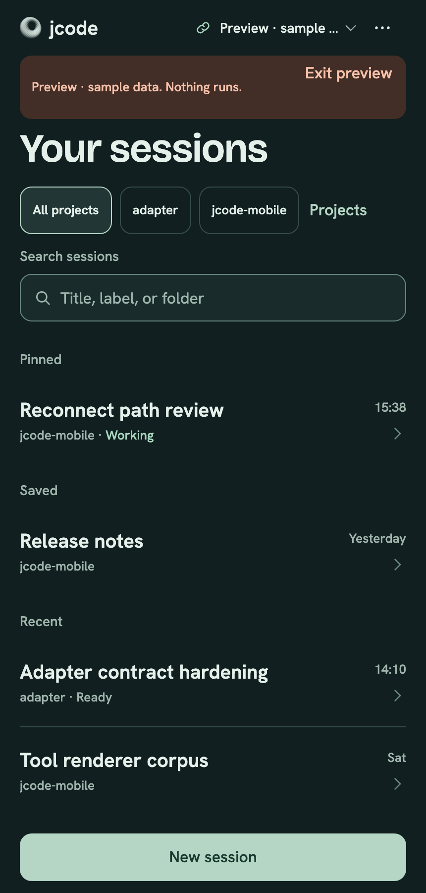

jcode
jcode
The work keeps moving
Your work.
In reach.
Your server runs JCode. This is where you stay close to the work.
01Sessions
02Conversation
03Work


v0.2.0 captures / Preview build, sample data